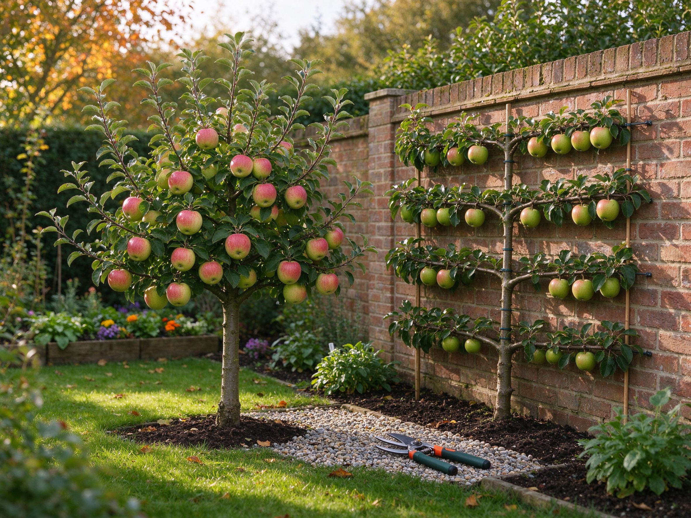

Fruit Trees for Small Gardens: Dwarf Varieties, Espalier & Pot Culture
You don't need an orchard to grow real fruit. A dwarf apple on a patio, a pear trained flat against a sunny wall, or a cherry in a half-barrel can produce surprisingly generous harvests — all in the space of a parking spot.
Step 1: Choose the Right Tree (Size Is Everything)
Almost every fruit tree sold today is grafted onto a rootstock that controls its final size. That's the single most important label to read:
- Dwarf rootstocks (e.g., M9 for apples, Quince C for pears) — 6-8 ft tall, ideal for pots and small borders, fruit within 2-3 years.
- Semi-dwarf (e.g., M26, Quince A) — 8-12 ft, good for small gardens with room for one open-center tree.
- Full-size — skip these unless you have serious space.
For the smallest spaces, family trees — several compatible varieties grafted onto one trunk — give you cross-pollination and a longer season from a single tree.
Step 2: The One Wall You Need — Espalier
Espalier is the classic small-garden trick: train a tree's branches flat against a wall or fence, in horizontal tiers or a fan shape. A south- or west-facing wall stores heat and ripens fruit weeks earlier. Apples, pears, and figs are the easiest to espalier; cherries and plums work as fans. Start with a one-year whip, attach horizontal branches to wires 12 inches apart, and prune the leaders each summer. It turns 10 feet of bare wall into a fruiting hedge.
Step 3: Potted Fruit — Yes, It Works
Dwarf apples, cherries, figs, and citrus grow happily in pots of 15-20 gallons. Use a quality potting mix and a layer of gravel for drainage. The rules:
- Water regularly — pots dry out fast; in summer that can mean every day.
- Feed monthly in the growing season with a balanced or fruit-tree fertilizer.
- Repot or top-dress every 2-3 years in spring.
- Move pots to a sheltered spot or unheated shed for winter where needed.
For blueberries, which need acid soil and have similar container needs, see our blueberry guide.
Pollination: Do You Need Two Trees?
Some fruit is self-fertile (most peaches, nectarines, figs, and many cherries like 'Stella'); apples, pears, and most plums need a different variety nearby to pollinate. In a tiny garden, that's what family trees solve. Or choose self-fertile varieties and check the label before you buy.
Pruning for a Small Tree
Keep it simple: prune in late winter while dormant. Remove dead or crossing branches, keep the center open for light and air, and cut back last year's growth by about a third to keep the tree compact and productive. On espaliers, keep summer-pruning side shoots back to 3-4 leaves so fruiting spurs form close to the main branches.
Year One Checklist
- Plant in full sun (6+ hours), sheltered from harsh wind.
- Dig a hole twice the rootball width; don't bury the graft union.
- Stake dwarf trees for the first 2-3 years.
- Water deeply through the first summer — establishment beats everything.
- Remove fruit in year one so the tree puts energy into roots and structure.
Fruit trees reward patience with decades of harvests — and they're the rare plant that gets more valuable every year. For more beginner fruit, our strawberry guide covers the fastest payoff, while trees are the long game.